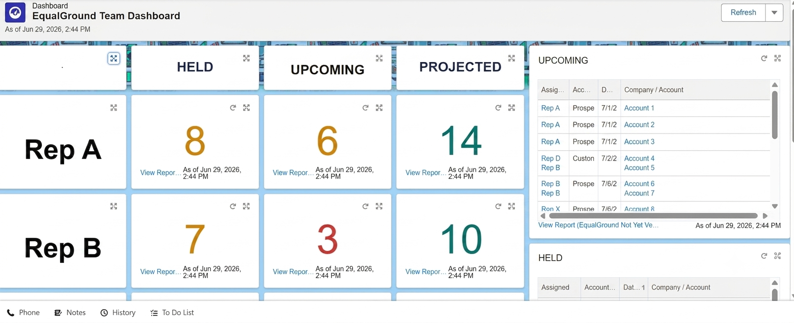

Built a consolidated Salesforce dashboard giving team leads a single source of truth on rep pipeline activity and quota attainment each quarter, rolling up demos held, lost demos, and upcoming pipeline against quota for every rep on the team.

Problem
No consolidated view of rep performanceDemos held, no-shows, and reschedules tracked manually or piecemealNo consistent way to measure progress against quota
Solution
Consolidated Salesforce dashboard per repHeld / Upcoming / Projected demo counts against quotaLost demos tracked (no-shows and reschedules)Rolled up across the department for every team lead
Outcome
Single source of truth for rep performanceReplaced manual or inconsistent trackingConsistent quarterly reporting across the department
How It Works
Rep Performance Rollup
Demos Held Tracked Per Rep
Lost Demos Logged (No-Shows and Reschedules)
Upcoming and Projected Pipeline Measured Against Quota